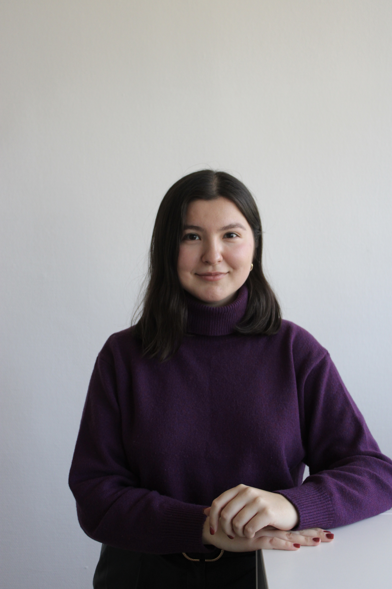

About
I am a PhD Candidate in Behavioural and Experimental Economics at the University of Lille (UMR 9221 – LEM, CNRS, IESEG) and a member of the iRisk team at IESEG School of Management. I hold a Master's degree in Financial Economics from Paris 1 Panthéon-Sorbonne and a Bachelor's degree in Economics from the Higher School of Economics, Moscow.
My research uses laboratory experiments to study human decision-making in the context of artificial intelligence — examining when people choose to delegate decisions to algorithms, how they form beliefs about AI performance, and what the broader consequences of AI adoption are.
References
Research Interests
Recent Updates
News
Apr. 2026
Presented at the Symposium on Behavioral AI in Education, Work, and Decision-Making, ESSCA Paris campus.
Dec. 2025
Presented at ASFEE Graduate Meeting, Aussois, France.
Sept. 2025
Presented at ESA Conference, Masaryk University, Brno, Czech Republic.
Sept. 2025
Started as Teaching Assistant (ATER) at University of Lille — FASEST | ISIEM.
June 2025
Presented at ASFEE Conference, Nancy, France.
2025
Received LEM Research Grant (EUR 3,500) for project Can I Trust the Machine? (with Vincent Lenglin).